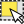
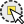
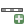

.
Allgemeine Werkzeuge¶
Tastenkürzel¶
KADAS bietet Standard Tastenkürzel für zahlreiche Funktionen. Sie können im Kapitel label_menubar nachgelesen werden. Zusätzlich ist es aber auch möglich, eigene Tastenkürzel zu definieren und bestehende zu ändern. Öffnen Sie dazu das Menü Einstellungen ‣ Tastenkürzel festlegen ....
Figure Shortcuts 1:
Tastenkürzel festlegen  (Gnome)
(Gnome)
Die Konfiguration ist sehr einfach. Wählen Sie einfach eine Aktion aus und drücken dann auf [Ändern], [Keins setzen] oder [Voreinstellung]. Wenn Sie ihre Einstellung gefunden haben, kann diese als XML-Datei abgespeichert und somit auch für eine andere KADAS Installation genutzt werden.
Hilfe¶
Wenn Sie Hilfe zu bestimmten Themen brauchen erreichen Sie die Kontext-Hilfe über den [Hilfe] Knopf der Ihnen in den meisten Dialogen zur Verfügung steht. Bitte beachten Sie daß Erweiterungen von Drittanbietern zu dementsprechend gewidmeten Internetseiten verweisen.
Layeranzeige kontrollieren¶
KADAS rendert standardmäßig alle sichtbaren Layer wenn das Kartenfenster aktualisiert werden muss. Die Abläufe, die eine ‘Erneuerung’ der Wiedergabe verursachen sind:
Einen Layer hinzufügen
Karten verschieben, hinein- oder herauszoomen
Die Größe des KADAS Fensters ändern
Layer ein- oder ausblenden
KADAS ermöglicht Ihnen den Darstellungsprozess in einer Reihe von Möglichkeiten zu steuern.
Maßstabsabhängige Layeranzeige¶
Die maßstabsabhängige Wiedergabe erlaubt es, einen mini- und maximalen Maßstab, in dessen Rahmen ein Layer angezeigt wird, anzugeben. Um die maßstabsabhängige Wiedergabe einzustellen öffnen Sie den Eigenschaften Dialog eines Layers, indem Sie diesen in der Legende doppelt anklicken, im Menü Allgemein die entsprechenden Einstellungen vornehmen und das Kontrollkästchen  Maßstabsabhängige Sichtbarkeit aktivieren.
Maßstabsabhängige Sichtbarkeit aktivieren.
Sie können die Maßstabswerte bestimmen indem Sie erst auf den Level den Sie benutzen wollen zoomen und den Maßstabswert in der KADAS Statusleiste notieren.
Layeranzeige kontrollieren¶
Die Kartendarstellung kann wie unten beschrieben auf verschiedene Art und Weise gesteuert werden.
Wiedergabe unterdrücken¶
Um die Wiedergabe einer Karte zu unterdrücken, klicken Sie auf das Kontrollkästchen Zeichnen auf der rechten Seite der Statusleiste. Wenn das Kontrollkästchen nicht aktiv ist, führt KADAS keine Erneuerung der Wiedergabe des Kartenfensters durch wie in Abschnitt Layeranzeige kontrollieren beschrieben. Beispiele, bei denen das Unterdrücken der Wiedergabe angewendet wird, sind:
Viele Layer hinzufügen und ihre Symbologie vor der Visualisierung einstellen
Einen oder mehrere große Layer hinzufügen und erst die maßstabsabhängige Wiedergabe einstellen
Einen oder mehrere große Layer hinzufügen und erst in ein bestimmtes Gebiet hineinzoomen
Eine Kombination aus den oben genannten Punkten
Wenn Sie die Zeichnen aktivieren, findet automatisch eine Erneuerung der Wiedergabe des Kartenfensters statt.
Option für Layer hinzufügen¶
Sie können für das Hinzuladen neuer Layer eine Einstellung vornehmen, die bewirkt, dass diese beim Laden erst einmal nicht angezeigt werden. Um diese Option zu nutzen deaktivieren Sie in der Menüleiste unter Einstellungen ‣ Optionen im Menü Darstellung das Kontrollkästchen Normalerweise werden alle neuen Layer im Kartenfenster angezeigt. Dadurch werden alle neu geladenen Layer erstmal nicht angezeigt.
Zeichnen stoppen¶
Um die Wiedergabe einer Karte zu stoppen drücken Sie die ESC Taste. Dies stoppt die Erneuerung der Wiedergabe und die Karte wird nur zum Teil angezeigt. Es kann sein dass etwas Zeit zwischen dem Drücken der Esc Taste und dem Stoppen der Kartenwiedergabe vergeht.
Bemerkung
Es ist derzeit nicht möglich das Zeichnen zu stoppen - diese Funktion wurde mit der Version qt4 ausgeschaltet da es zu Problemen und Abstürzen der Benutzeroberfläche kam.
Anpassen des Kartenfensters bei der Wiedergabe¶
Normalerweise werden in QGIS Inhalte von Layern erst visualisiert wenn sämtliche Daten geladen sind. Um zu bewirken, dass die Inhalte von Layern direkt beim Lesen angezeigt werden, verändern Sie in der Menüleiste unter Einstellungen ‣Optionen im Menü Darstellung die Anzahl von Objekten, nach deren Zeichnung die Anzeige aktualisiert werden soll. Der Wert 0 (Standard) verhindert die Aktualisierung während des Zeichnens. Bei zu niedrigem Wert leidet die Leistung, das ständig ein Update der Wiedergabe stattfindet. Zu Beginn ist oftmals ein Wert von 500 sinnvoll.
Die Qualität der Wiedergabe beeinflussen¶
Um die Wiedergabequalität der Layer zu beeinflussen gibt es zwei Möglichkeiten. Öffnen Sie das Menü Darstellung im Menü Einstellungen ‣ Optionen und aktivieren bzw. deaktivieren Sie folgende Kontrollkästchen.
- Linien auf Kosten der Zeichengeschwindigkeit weniger gezackt zeichnen
- Problem mit falsch gefüllten Polygonen beheben
Darstellung beschleunigen¶
Es gibt zwei Einstellungen die es Ihnen ermöglichen die Darstellungsgeschwindigkeit zu erhöhen. Öffnen Sie den KADAS Optionen Dialog indem Sie Einstellungen ‣ Optionen benutzen, gehen Sie zum Darstellung Menü und aktivieren oder deaktivieren Sie die folgenden Kontrollkästchen:
- Hintergrundpuffer aktivieren. Dies sorgt für eine bessere Grafikleistung wobei dann das Darstellen dann nicht mehr gestoppt und Objekte nicht mehr stufenweise dargestellt werden können. Wenn es deaktiviert ist können Sie die Anzahl von Objekten nach deren Zeichnung die Anzeige aktualisiert werden soll
 festlegen, sonst ist diese Option nicht aktiv.
festlegen, sonst ist diese Option nicht aktiv. - Wo möglich den Darstellungscache benutzen, um das Neuzeichnen zu beschleunigen
Messen¶
Das Messen funktioniert mit Projektionen (z.B. UTM) und auch mit nicht projizierten Daten. Wenn die geladene Karte als Geografisches Koordinatensystem abgebildet wird (z.B. Latitude/Longitude) sind die Messergebnisse falsch. Sie müssen dann ein passendes KBS mit einer Projektion verwenden (siehe Abschnitt Arbeiten mit Projektionen). Alle Meßwerkzeuge verwenden auch die eingestellte Fangtoleranz der Digitalisierung. Dies ist zum Beispiel dann sinnvoll, wenn Sie entlang von Linien oder Polygongrenzen geladener Vektorlayer messen wollen.
Um ein Meßwerkzeug auszuwählen klicken Sie auf  und suchen das Werkzeug das Sie benutzen wollen aus.
und suchen das Werkzeug das Sie benutzen wollen aus.
Strecken, Flächen und Winkel messen¶
Measure Line: KADAS is able to measure real distances
between given points according to a defined ellipsoid. To configure this,
choose menu option Settings ‣ Options, click on the
Map tools tab and select the appropriate ellipsoid. There, you can
also define a rubberband color and your preferred measurement units (meters or
feet) and angle units (degrees, radians and gon). The tool then allows you to
click points on the map. Each segment length, as well as the total, shows up in
the measure window. To stop measuring, click your right mouse button.
Note that you can interactively change the measurement units in the measurement
dialog. It overrides the Preferred measurement units in the options.
There is an info section in the dialog that shows which CRS settings are being used
during measurement calculations.
Figure Measure 1:

Entfernungen messen (Gnome)
Fläche messen: Auch Flächengrößen können gemessen werden. Das Popup zeigt dabei die akkumulierte Flächengröße. Zusätzlich schnappt das Meßwerkzeug auf den gerade ausgewählten Layer wenn für den entsprechenden Layer ein Fangmodus eingestellt wurde (siehe Abschnitt snapping_tolerance). Wenn Sie also exakt entlang einer Linie oder Polygonumrandung messen möchten, setzen Sie erst eine Fangtoleranz und selektieren dann den Layer. Wenn Sie jetzt das Meßwerkzeug benutzen schnappt man mit jedem Mausklick (innerhalb der eingestellten Toleranz) auf den Layer.
{kind=link}
Figure Measure 2:

Flächen messen (Gnome)
 Winkel messen: Auch Winkel können mit dem Winkel messen- Werkzeug gemessen werden. Der Mauszeiger wird zum Kreuz. Drücken Sie die linke Maustaste und zeichnen Sie das erste Segment des Winkels, klicken nochmals auf die linke Maustaste und messen sie den Winkel, der im Dialogfenster angezeigt wird.
Winkel messen: Auch Winkel können mit dem Winkel messen- Werkzeug gemessen werden. Der Mauszeiger wird zum Kreuz. Drücken Sie die linke Maustaste und zeichnen Sie das erste Segment des Winkels, klicken nochmals auf die linke Maustaste und messen sie den Winkel, der im Dialogfenster angezeigt wird.
Figure Measure 3:

Winkel messen (Gnome)
Objekte auswählen und Auswahl aufheben¶
Die Werkzeugleiste bietet mehrere Werkzeuge, um Objekte im Kartenfenster auszuwählen. Um ein oder mehrere Objekte auszuwählen, klicken Sie auf  und wählen Sie dann das entsprechende Werkzeug:
und wählen Sie dann das entsprechende Werkzeug:
- Einzelnes Objekt wählen
 Objekte durch Rechteck wählen
 Objekte durch Polygon wählen
Objekte durch Polygon wählen Objekte durch Radius wählen
{kind=link}
{kind=link}
{kind=link}
Um die Auswahl von Objekten wieder aufzuheben, klicken Sie auf den Knopf  .
.
 Objekte mit einem Ausdruck wählen ermöglicht es dem Anwender ein Objekt anhand eines Ausdruckdialoges auszuwählen. Siehe auch die Beispiele in Kapitel Ausdrücke .
Objekte mit einem Ausdruck wählen ermöglicht es dem Anwender ein Objekt anhand eines Ausdruckdialoges auszuwählen. Siehe auch die Beispiele in Kapitel Ausdrücke .
Anwender können eine Objektauswahl in Neuer Memory-Vektorlayer oder Neuer Vektorlayer anhand von Bearbeiten ‣ Objekte einfügen als ‣ speichern indem Sie den gewünschten Modus auswählen.
Objekte abfragen¶
Das Objekte abfragen Werkzeug ermöglicht es Ihnen mit dem Kartenfenster zu interagieren und Informationen über Objekte über eine Pop-Up Fenster abzurufen. Um ein Objekt abzufragen verwenden Sie Ansicht ‣ Objekte abfragen, drücken Sie Strg + Umschalt + I oder klicken Sie auf das  Objekte abfragen Icon in der Werkzeugleiste.
Objekte abfragen Icon in der Werkzeugleiste.
If you click on several features, the Identify results dialog will list information about all the selected features. The first item is the number of the layer in the list of results, followed by the layer name. Then, its first child will be the name of a field with its value. The first field is the one selected in Properties ‣ Display. Finally, all information about the feature is displayed.
Dieses Fenster kann angepasst werden um benutzerdefinierte Felder anzuzeigen, standardmäßig gibt es drei Arten von Informationen wieder:
Aktionen: Aktionen können zum Objekte abfragen Fenster hinzugefügt werden. Wenn Sie dann auf das Aktionen-Icon klicken wird eine Aktion ausgeführt. Standardmäßig wird nur eine Aktion hinzugefügt um das Objektformular zum Bearbeiten darzustellen.
Abgeleitet: Diese Information wird von anderen Informationen berechnet oder abgeleitet. Sie können hier durch einen Klick X- und Y-Koordinate, Fläche in Karteneinheiten und Umfang in Karteneinheiten von Polygonen, Längen in Karteneinheiten von Linien und Objekt IDs herausfinden.
Datenattribute: Dies ist die Liste von Attributfeldern aus den Daten.
Figure Identify 1:
Objekte abfragen Dialog (Gnome)
At the top of the window, you have five icons:
 Baum ausklappen
Baum ausklappen Baum einklappen
Baum einklappen Neue Ergebnisse erscheinen automatisch ausgeklappt.
Neue Ergebnisse erscheinen automatisch ausgeklappt. Gewählte Objekte in Zwischenablage kopieren.
Gewählte Objekte in Zwischenablage kopieren. Gewählte HTML-Antwort drucken
Gewählte HTML-Antwort drucken
At the bottom of the window, you have the Mode and View comboboxes. With the Mode combobox you can define the identify mode: ‘Current layer’, ‘Top down, stop at first’, ‘Top down’ and ‘Layer selection’. The View can be set as ‘Tree’, ‘Table’ and ‘Graph’.
The identify tool allows you to auto open a form. In this mode you can change the feautures attributes.
Andere Funktionen können im Kontextmenü des abgefrageten Objekts gefunden werden. Im Kontextmenü können Sie z.B.:
Das Objektformular anzeigen
Zum Objekt zoomen
Objekt kopieren: Kopieren Sie alle Objektgeometrien und -attribute
Auswahl des Objekts umkehren: fügt das ausgewählte Objekt der Auswahl hinzu
Attributwert kopieren: Kopieren Sie nur den Wert des Attributes auf das Sie klicken
Objektattribute kopieren: Kopieren Sie nur die Attribute
Ergebnisse löschen: Löschen Sie Ergebnisse im Fenster
Hervorhebungen löschen: Entfernen Sie in der Karte hervorgehobene Objekte
Alle hervorheben
Layer hervorheben
Layer aktivieren: Wählen Sie einen Layer der aktiviert werden soll
Layereigenschaften ... : Öffnen Sie das Layereigenschaften Fenster
Alles ausklappen
Alles zusammenfalten
Dekorationen¶
Die Dekorationen von KADAS umfassen das Gitter, den Urheberrechtshinweis, den Nordpfeil und die Maßstabsleiste. Sie werden zum Dekorieren der Karte durch Hinzufügen von kartografischen Elementen benutzt.
Gitter¶
 Gitter ermöglicht es Ihnen ein Koordinatengitter und Koordinatenbeschriftungen der Karte hinzuzufügen.
Gitter ermöglicht es Ihnen ein Koordinatengitter und Koordinatenbeschriftungen der Karte hinzuzufügen.
Figure Decorations 1:

Der Gitter Dialog
Wählen Sie das Menü Ansicht‣ Dekorationen ‣ Gitter. Der Dialog öffnet sich (siehe figure_decorations_1).
Aktivieren Sie das Kontrollkästchen
Aktiviere Gitter und machen Sie Definitionen gemäß den Layern die Sie ins Kartenfenster geladen haben.Aktivieren Sie das Kontrollkästchen
Beschriftungen zeichnen und machen Sie Beschriftungsdefinitionen gemäß den im Kartenfenster geladenen Layern.Klicken Sie [Anwenden] um sicherzugehen dass es so aussieht wie sie es erwarten.
Klicken Sie [OK] um den Dialog zu schließen.
Urheberrechtshinweis¶
 Urheberrechtshinweis fügt einen Urheberrechtshinweis mit dem Text Ihrer Wahl in Ihr Kartenfenster ein.
Urheberrechtshinweis fügt einen Urheberrechtshinweis mit dem Text Ihrer Wahl in Ihr Kartenfenster ein.
Figure Decorations 2:

Der Urheberrechtshinweis-Dialog
Wählen Sie Ansicht ‣ Dekorationen ‣ Urheberrechtshinweis. Der Dialog öffnet sich (siehe figure_decorations_2)
Geben Sie den Text den Sie auf der Karte platzieren wollen ein. Sie können wie im Beispiel gezeigt HTML benutzen.
Wählen Sie die Platzierung der Beschriftung in der Platzierung
 Kombobox aus.
Kombobox aus.Versichern Sie sich dass das
Urheberrechtshinweis aktivieren Kontrollkästchen aktiviert ist.Klicken Sie [OK].
Im oben genannten Beispiel, das den Standard darstellt, platziert KADAS einen Urheberrechtshinweissymbol gefolgt vom Datum in der rechten unteren Ecke des Kartenfensters.
Nordpfeil¶
 Nordpfeil platziert einen einfachen Nordpfeil im Kartenfenster. Bislang steht hierfür lediglich eine Pfeilform zur Verfügung. Sie können die Richtung des Nordpfeiles entweder selbst anpassen oder dies automatisch von KADAS bewerkstellingen lassen. Wenn Sie es KADAS überlassen die Richtung zu bestimmen, entscheided das Programm, in welche Richtung der Nordpfeil idealerweise zeigen sollte. Zum Platzieren des Pfeils haben Sie vier Möglichkeiten entsprechend den vier Ecken des Kartenfensters.
Nordpfeil platziert einen einfachen Nordpfeil im Kartenfenster. Bislang steht hierfür lediglich eine Pfeilform zur Verfügung. Sie können die Richtung des Nordpfeiles entweder selbst anpassen oder dies automatisch von KADAS bewerkstellingen lassen. Wenn Sie es KADAS überlassen die Richtung zu bestimmen, entscheided das Programm, in welche Richtung der Nordpfeil idealerweise zeigen sollte. Zum Platzieren des Pfeils haben Sie vier Möglichkeiten entsprechend den vier Ecken des Kartenfensters.
Figure Decorations 3:
Der Nordpfeil Dialog
Maßstab¶
 Maßstab fügt einen einfachen Maßstab in das Kartenfenster ein. Sie können Maßstabstil und Platzierung so wie die Beschriftung des Balkens steuern.
{kind=link}
Figure Decorations 4:
Der Maßstab Dialog
KADAS unterstützt hierbei jedoch lediglich die Darstellung des Balkens in denjenigen Einheiten, die auch in Ihren entsprechenden Karten verwendet werden. Dies bedeutet, dass Sie einer Karte deren Layer der Einheit Meter entsprechen, keinen Maßstabsbalken in den Einheiten Fuß oder Zoll hinzufügen können.
Das Hinzufügen eines Maßstabbalkens geht folgendermaßen:
Klicken Sie auf Ansicht ‣ Dekorationen ‣ Maßstab. Der Dialog startet (siehe figure_decorations_4).
Wählen Sie die Platzierung aus der Platzierung
Kombobox aus.Wählen Sie den Stil aus der Maßstabsstil
Kombobox aus.Wählen Sie die Farbe für den Balken unter Balkenfarbe
 oder benutzen Sie die standardmäßig eingestellte schwarze Farbe.
oder benutzen Sie die standardmäßig eingestellte schwarze Farbe.Legen Sie die Größe des Balkens und seine Beschriftung unter Größe des Maßstabs
fest.Versichern Sie sich dass das
Aktiviere Maßstab Kontrollkästchen aktiviert ist.Gegebenenfalls können Sie
Bei Größenänderungen automatisch runde Zahlen einstellen aktivieren.Klicken Sie [OK].
Tipp
Einstellungen von Dekorationen
Wenn Sie ein .qgs -Projekt speichern werden alle bezüglich Nordpfeil, Maßstab und Urheberrechtshinweis gemachten Änderungen im Projekt gespeichert und das nächste Mal wenn das Projekt geladen wird wiederhergestellt
Beschriftungstools¶
Das  Beschriftungstext-Werkzeug in der Atrribut-Werkzeugleiste bietet die Möglichkeit formatierten Text in einer Sprechblase im KADAS Kartenfenster zu platzieren. Aktivieren Sie dazu einfach das Beschriftungstext-Werkzeug und klicken Sie in das Kartenfenster.
Beschriftungstext-Werkzeug in der Atrribut-Werkzeugleiste bietet die Möglichkeit formatierten Text in einer Sprechblase im KADAS Kartenfenster zu platzieren. Aktivieren Sie dazu einfach das Beschriftungstext-Werkzeug und klicken Sie in das Kartenfenster.
Figure annotation 1:

Anmerkungstext Dialog
Ein Doppelklick auf das Element öffnet den Dialog mit verschiedenen Optionen. Im Texteditor können Sie den formatierten Text eingeben und einige Einstellungen vornehmen. Z.B. kann das Objekt an einer bestimmten Stelle positioniert werden, was dann durch ein Markersymbol angezeigt wird. Oder das es unabhängig von dem Objekt im Kartenfenster angezeigt wird. Der Text kann entweder durch Verschieben der Markierung oder der Sprechblase im Kartenfenster verschoben werden.
Das  Beschriftung verschieben Werkzeug ermöglicht es Ihnen die Beschriftung auf den Kartenfenster zu verschieben.
Beschriftung verschieben Werkzeug ermöglicht es Ihnen die Beschriftung auf den Kartenfenster zu verschieben.
HTML-Beschriftung¶
Die  HTML-Beschriftung Werkzeuge in der Attribut-Werkzeugleiste ermöglichen es den Inhalt einer HTML-Datei in einer Sprechblase auf dem KADAS-Kartenfenster zu platzieren. Benutzen Sie das HTML-Beschriftung Werkzeug indem Sie ins Kartenfenster klicken und den Pfad zur HTML-Datei in den Dialog einfügen.
HTML-Beschriftung Werkzeuge in der Attribut-Werkzeugleiste ermöglichen es den Inhalt einer HTML-Datei in einer Sprechblase auf dem KADAS-Kartenfenster zu platzieren. Benutzen Sie das HTML-Beschriftung Werkzeug indem Sie ins Kartenfenster klicken und den Pfad zur HTML-Datei in den Dialog einfügen.
SVG-Anmerkung¶
Das  SVG-Anmerkung Werkzeug in der Attribut-Werkzeugleiste ermöglicht es ein SVG-Symbol in einer Sprechblase auf dem KADAS-Kartenfenster zu platzieren. Um das SVG-Anmerkung Werkzeug zu benutzen klicken Sie in das Kartenfenster und fügen Sie den Pfad zur SVG-Datei in den Dialog ein.
SVG-Anmerkung Werkzeug in der Attribut-Werkzeugleiste ermöglicht es ein SVG-Symbol in einer Sprechblase auf dem KADAS-Kartenfenster zu platzieren. Um das SVG-Anmerkung Werkzeug zu benutzen klicken Sie in das Kartenfenster und fügen Sie den Pfad zur SVG-Datei in den Dialog ein.
Beschriftungsformular¶
Zusätzlich können Sie eigene Beschriftungsformulare erstellen. Das Beschriftungsformular Werkzeug ist nützlich um Attribute eines Vektorlayers in einem maßgeschneiderten QT-Designer Beschriftungsformular anzuzeigen (siehe figure_custom_annotation). Es ist ähnlich wie die Designer-Formulare für das Identifizierungswerkzeug, wird aber als Beschriftungstext angezeigt. Siehe auch das Video https://www.youtube.com/watch?v=0pDBuSbQ02o von Tim Sutton für weitere Informationen.
Figure annotation 2:

Benutzerfreundliches QT Designer Beschriftungsformular
Bemerkung
Wenn Sie das Tastenkürzel Ctrl+T drücken während ein Beschriftungswerkzeug aktiv ist ändert sich deren Anzeigestatus zwischen an und aus.
Räumliche Lesezeichen¶
Räumliche Lesezeichen ermöglichen es, geografische Orte zu markieren und als Lesezeichen abzuspeichern, um dorthin später zurückzufinden.
Ein Lesezeichen erstellen¶
Um ein Lesezeichen zu erstellen:
Zoomen oder verschieben Sie das Kartenfenster in einen Ausschnitt Ihrer Wahl.
Wählen Sie in der Menüleiste Ansicht ‣ Neues Lesezeichen oder drücken Sie kbd:Ctrl-B.
Geben Sie eine Beschreibung für das Lesezeichen ein (bis zu 255 Zeichen).
Klicken Sie auf Enter um das Lesezeichen hinzuzufügen oder auf [Löschen] um das Lesezeichen zu entfernen.
Sie können mehrere Lesezeichen mit demselben Namen erstellen.
Arbeiten mit Lesezeichen¶
Um räumliche Lesezeichen zu verwenden oder zu verwalten wählen Sie die Menüoption Ansicht ‣ Lesezeichen anzeigen . Mit dem Räumliches Lesezeichen Dialog können Sie zu einem räumlichen Lesezeichen zoomen oder ein Lesezeichen löschen. Sie können hier den Namen und die Koordinaten des Lesezeichens bearbeiten.
Auf ein Lesezeichen zoomen¶
Im Dialogfenster Räumliches Lesezeichen klicken Sie auf das gewünschte Lesezeichen und wählen dann den Knopf [Zoomen auf]. Sie können auch auf ein Lesezeichen zoomen, indem Sie es mit einem Doppelklick auswählen.
Ein Lesezeichen löschen¶
Um ein Lesezeichen aus dem Räumliches Lesezeichen Dialog zu löschen klicken Sie es an und klicken Sie dann [Löschen]. Bestätigen Sie Ihre Wahl indem Sie [OK] klicken oder brechen Sie das Löschen mit [Abbrechen] ab.
Import or export a bookmark¶
To share or transfer your bookmarks between computers you can use the Share pull down menu in the Geospatial Bookmarks dialog.
Layer/Gruppen einbinden¶
Wenn Sie Inhalte von anderen Projekten in Ihr Projekt einbinden wollen wählen Sie Layer ‣ Eingebettete Layer und Gruppen ....
Layer einbetten¶
Mit dem folgenden Dialog können Sie Layer von anderen Projekten einbetten. Hier ein kleines Beispiel:
Drückekn Sie
 um nach einem anderen Projekt des Alaskadatensatzes zu suchen.
um nach einem anderen Projekt des Alaskadatensatzes zu suchen.Wählen Sie die Projektdatei grassland. Sie können hier den Inhalt des Projektes einsehen (siehe figure_embed_dialog).
Klicken Sie Strg und klicken Sie auf die Layer grassland und regions. Klicken Sie [OK]. Die ausgewählten Layer sind jetzt in Legende und Kartenfenster eingebettet.
Figure Nesting 1:

Einzubettende Layer und Gruppen wählen
Währenddessen die Layer editierbar sind können Sie Ihre Eigenschaften wie Darstellung und Beschriftung nicht ändern.
Eingebettete Layer entfernen¶
Machen Sie einen Rechtsklick auf den eingebetteten Layer und wählen Sie  Entfernen.
Entfernen.